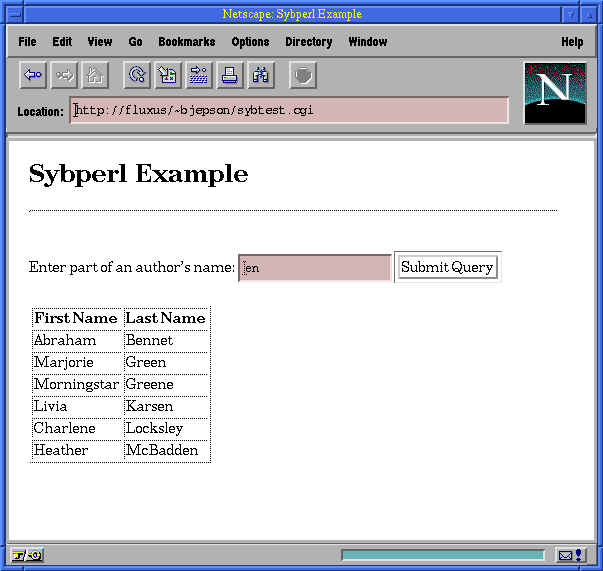

![[ TABLE OF CONTENTS ]](../gx/indexnew.gif)
![[ FRONT PAGE ]](../gx/homenew.gif)


Mr. Fiction isn't completely convinced about Linux; perhaps he never will be. Nevertheless, he dutifully helps me when I'm trying to bring up Linux on an old Compaq 386 with the weirdest memory chips, or when we need to build the kernel yet again, because I've decided that I'm ready to trust ext2fs file system compression or some such whim.
This time, Mr. Fiction was baiting me. "Alright, Brian. How can Linux help me here? I've got a client who is using SQL Server on Windows NT for her company-wide databases. She'd really like to publish this data on her Intranet using HTML and CGI. While she's really happy with Microsoft for a database server platform, she's not convinced that it's good as a web server. We're looking into Unix-based solutions, and we really need a platform that allows us to write CGI script that can connect to the database server. But since Linux doesn't have connectivity to..."
That's when I had to stop him; Linux can connect to Sybase SQL Server. What's more, it can also connect to Microsoft SQL Server. Some time ago, Sybase released an a.out version of their Client-Library (CT-Lib) for Linux. Greg Thain (thain@ntdev1.sunquest.com) has converted the libraries to ELF. As a result, anyone using an elf-based Linux later than 2.0 should be able to link applications against these libraries. There's a nice section on this issue that's available in the Sybase FAQ, at http://reality.sgi.com/pablo/Sybase_FAQ/Q9.17.html, and the libraries themselves can be downloaded from:
ftp://mudshark.sunquest.com/pub/ctlib-linux-elf/ctlib-linux-elf.tgz.If you are using an a.out system, you can take your chances with the libraries that Sybase originally released. These are available at:
ftp://ftp.sybase.com/pub/linux/sybase.tgz
http://www.sybase.com/products/system11/workplace/ntpromofrm.htmlIf you do this, it goes without saying that you'll need another computer (running Windows NT) that's connected to your Linux box via TCP/IP. Sadly, there is no version of Sybase or Microsoft SQL Server that runs on Linux. However, if you have access to a machine that is running SQL Server, then you will likely find this article interesting.
In order to make use of these examples, you need to have been assigned a user id and password on the SQL Server to which you will connect. You should also know the hostname of the server, and most importantly, the port on which the server listens. If you installed the server yourself, you will know all of this. Otherwise, you will need to get this information from your sysadmin or dba.
The first thing to tackle is the installation and
configuration of the Client-Library distribution. The
ctlib-linux-elf.tar.gz file includes a top-level
sybase directory. Before you extract it, you
should probably pick a permanent home for it; common places
are /opt or /usr/local. When you
extract it, you should be sure that you are root, and make
sure your working directory is the directory that you've chosen. The process
might look something like this:
bash-2.00$ su Password: bash-2.00# cd /usr/local bash-2.00# tar xvfz ctlib-linux-elf.tar.gzWhile you will be statically linking these libraries in with application programs, any program that uses the Sybase libraries will need to find the directory. There are two ways to deal with this, and I usually do both. The first is to create a user named
sybase. This user's home
directory should be the Client-Library directory into which you
extracted ctlib-linux-elf.tar.gz. The user
won't need to log in, and I'm not aware of any
programs that need to su to that user id. I believe the user needs
to be there so that ~sybase can be resolved to the
directory you chose. Here's the relevant line
from /etc/passwd for the sybase user:
sybase:*:510:100:SYBASE:/usr/local/sybase:/bin/trueOf course, your UID and GID may differ, and you can certainly use the
adduser utility to add the
sybase user. The critical thing is to ensure that you've set
the home directory correctly.The second thing you can do to help applications find the Sybase directory is to create an environment variable called $SYBASE. This should simply include the name of the Client-Library home directory:
bash-2.00$ export SYBASE=/usr/local/sybaseThe
interfaces file included in the
top of the Client-Library home directory
(/usr/local/sybase/interfaces in this example) must be set up
correctly in order for anything to work. The interfaces file
allows your clients to associate a symbolic name with a
given server. So, any server you wish to query must be
configured in the interfaces file. If you've already got an
interfaces file in non-TLI format (this is the name of the
network API used by Sybase on Solaris, and the interfaces file differs
as well), you should be able to use it or adapt it. Even if
you don't, you can write your own entries. Here's a sample
entry (that's a tab on the second line, and it
is very important):
ARTEMIS
query tcp ether artemis 1433
The parts of this entry that you are concerned about are:
| ARTEMIS | This is the name by which client programs will refer to the server. It doesn't have to be the same as the host name. |
| artemis | This is the host name of the server. |
| 1433 | This is the TCP/IP socket that the server listens on. |
Here's an interfaces file that includes entries for both a Sybase SQL Server (running on Solaris) and a Microsoft SQL Server, running on Windows NT (comments begin with #). Note that the entries ARTEMIS and NTSRV refer to the same server:
## DEV_SRVR on Sol2-5 (192.168.254.24)
## Services:
## query tcp (5000)
DEV_SRVR
query tcp ether Sol2-5 5000
## NTSRV on artemis (192.168.254.26)
## Services:
## query tcp (1433)
NTSRV
query tcp ether artemis 1433
## ARTEMIS on artemis (192.168.254.26)
## Services:
## query tcp (1433)
ARTEMIS
query tcp ether artemis 1433
|
SQSH can be compiled on Linux; this should be simple for anyone
who is familiar with compiling C programs, such as the Linux kernel,
Perl, or other tools you may have installed from source. The
first thing to do is to extract the SQSH archive, preferable
in some place like /usr/src. I usually do installations as
root; some people wait until just before the 'make install'
portion to become root. You can extract the distribution
with the following command:
bash-2.00# tar xvfz sqsh-1.5.2.tar.gzAnd then you can enter the source directory with:
bash-2.00# cd sqsh-1.5.2(of course, if you are building a newer version, you will need to use a different file name and directory)
There are two files in the source directory that you must read; README and INSTALL. If you'd like to compile SQSH with bash-style command history editing, you'll need to get your hands on the GNU Readline library, unless it's already installed on your system. I believe that it's no longer packaged as a separate library, and is now part of the bash distribution, available at:
ftp://prep.ai.mit.edu/pub/gnu/Before you do anything, you'll need to make sure you set the $SYBASE environment variable, which I discussed earlier in this article. Then, you should run the configure script. This process might look like:
bash-2.00# export SYBASE=/usr/local/sybase/ bash-2.00# ./configure creating cache ./config.cache checking for gcc... gcc [etc., etc.]If you've installed the GNU Readline library, and you want to use it with SQSH (who wouldn't?) you should add the following option to ./configure:
bash-2.00# ./configure -with-readlineAfter you've run configure, you should examine the Makefile, and follow the instructions at the top. Generally, ./configure does everything right, but you should double-check. If everything looks okay, you can type:
bash-2.00# makeAnd sit back and wait. If everything went fine, you should have a new
sqsh executable that you can install with:
bash-2.00# make installIn order to run it, you must supply a server name (-S), username (-U), and password (-P). The server name corresponds to the name that was set up in your
interfaces file. Once you've
started sqsh, you can issue SQL commands. To send whatever
you've typed to the server, you can type go by
itself on a line. To clear the current query, you can type
reset. If you'd like to edit the current query,
you can type vi. Among many other features,
sqsh features the ability to use shell-style redirection after the
'go' keyword. Here's a sample session:
bash-2.00# sqsh -Ubjepson -Psecretpassword -SARTEMIS
sqsh-1.5.2 Copyright (C) 1995, 1996 Scott C. Gray
This is free software with ABSOLUTELY NO WARRANTY
For more information type '\warranty'
1> use pubs /* the pubs sample database */
2> go
1> SELECT au_lname, city
2> FROM authors
3> go | grep -i oakland
Green Oakland
Straight Oakland
Stringer Oakland
MacFeather Oakland
Karsen Oakland
1> sp_who
2> go
spid status loginame hostname blk dbname cmd
------ ---------- ------------ ---------- ----- ---------- ----------------
1 sleeping sa 0 master MIRROR HANDLER
2 sleeping sa 0 master LAZY WRITER
3 sleeping sa 0 master RA MANAGER
9 sleeping sa 0 master CHECKPOINT SLEEP
10 runnable bjepson 0 pubs SELECT
11 sleeping bjepson 0 pubs AWAITING COMMAND
(6 rows affected, return status = 0)
1>
|
It's probably best to use a Perl that has been installed from source. In the past, I have had trouble with binary distributions, and so, I always install the Perl source code and build it myself. You should obtain and extract the following modules from CPAN (Comprehensive Perl Archive Network):
CGI.pm: http://www.perl.com/CPAN/modules/by-module/CGI/CGI.pm-2.36.tar.gz Sybperl: http://www.perl.com/CPAN/modules/by-module/Sybase/sybperl-2.07.tar.gzInstalling the CGI module is quite simple. You need to extract it, enter the directory that's created, and follow the instructions in the README file. For most Perl modules, this will follow the form:
bash-2.00# tar xvfz MODULE_NAME.tar.gz bash-2.00# cd MODULE_NAME bash-2.00# less README [ ... you read the file ...] bash-2.00# perl Makefile.PL [ ... some stuff happens here...] bash-2.00# make [ ... lots of stuff happens here...] bash-2.00# make test [ ... lots of stuff happens here...] bash-2.00# make installYou should double check to make sure that CGI.pm is not already installed; if you install it, you should do it as root, since it needs to install the module into your site-specific module directories. Here's the commands I typed to make this happen for the CGI extension (note that there are no tests defined for CGI.pm, so I didn't need to do 'make test'):
bash-2.00# tar xvfz CGI.pm-2.36.tar.gz
bash-2.00# cd CGI.pm-2.36
bash-2.00# perl Makefile.PL
bash-2.00# make
bash-2.00# make install
Once you've installed it, you can use it in your Perl
programs; do a 'perldoc CGI' for complete instructions.Installing Sybperl is a little more involved. If you don't want to build Sybperl yourself, you can download a binary version from:
ftp://mudshark.sunquest.com/pub/ctlib-linux-elf/sybperl.tar.gzIf you do want to go ahead and build it yourself, first extract it and enter the source directory:
bash-2.00# tar xvfz sybperl-2.07.tar.gz bash-2.00# cd sybperl-2.07/Again, it's really important that you read the README file. Before you run 'perl Makefile.PL,' you will need to set up a couple of configuration files. The first is CONFIG. This file lets you set the following parameters:
| DBLIBVS | The version of DBlib that you have installed. Under Linux, only CTlib is available, so this should be set to 0. |
| CTLIBVS | This should be set to 100, as indicated in the file. |
| SYBASE | This is the directory where you installed the Client-Library distribution. It should be the same as $SYBASE or ~sybase. |
| EXTRA_LIBS | These are the names of additional libraries that you need to link against. The Sybase Client-Library distribution typically includes a library called libtcl.a, but this conflicts with the Tcl library installed under many versions of Linux. So, this has been renamed libsybtcl.a in the Linux version of CTlib. This option should also include libinsck.a. The value for this configuration option should be set to '-lsybtcl -linsck'. |
| EXTRA_DEFS | It does not appear that this needs to be changed, unless you are using Perl 5.001m, in which case you need to add -DUNDEF_BUG. |
| LINKTYPE | Under Linux, I am not aware of anyone who has managed to get a dynamically loadable version of Sybperl to build. I have not been able to get it to compile as a dynamic module, so I always set this to 'static', which results in a new perl executable being built. |
Here's my CONFIG file:
# # Configuration file for Sybperl # # DBlibrary version. Set to 1000 (or higher) if you have System 10 # Set to 0 if you do not want to build DBlib or if DBlib is not available # (Linux, for example) DBLIBVS=0 # CTlib version. Set to 0 if Client Library is not available on your # system, or if you don't want to build the CTlib module. The Client # Library started shipping with System 10. # Note that the CTlib module is still under construction, though the # core API should be stable now. # Set to 100 if you have System 10. CTLIBVS=100 # Where is the Sybase directory on your system (include files & # libraries are expected to be found at SYBASE/include & SYBASE/lib SYBASE=/usr/local/sybase # Additional libraries. # Some systems require -lnsl or -lBSD. # Solaris 2.x needs -ltli # DEC OSF/1 needs -ldnet_stub # See the Sybase OpenClient Supplement for your OS/Hardware # combination. EXTRA_LIBS=-lsybtcl -linsck # Additional #defines. # With Perl 5.001m, you will need -DUNDEF_BUG. # With Perl 5.002, none are normally needed, but you may wish to # use -DDO_TIE to get the benefit of stricter checking on the # Sybase::DBlib and Sybase::CTlib attributes. #EXTRA_DEFS=-DUNDEF_BUG EXTRA_DEFS=-DDO_TIE # LINKTYPE # If you wish to link Sybase::DBlib and/or Sybase::CTlib statically # into perl uncomment the line below and run the make normally. Then, # when you run 'make test' a new perl binary will be built. LINKTYPE=static |
The next file that you need to enter is the PWD file. This contains three configuration options; UID (user id), PWD (password), and SRV (server name). It is used to run the test, after the new perl binary is built. Here's my PWD file:
# This file contains optional login id, passwd and server info for the test # programs: # You probably don't want to have it lying around after you've made # sure that everything works OK. UID=sa PWD=secretpassword SRV=ARTEMIS |
Now that you've set up the configuration files, you should type 'perl Makefile.PL' followed by 'make'. Disregard any warning about -ltcl not being found. After this is done, you should type 'make test', which will build the new Perl binary and test it. All of the tests may not succeed, especially if you are testing against Microsoft SQL Server (the cursor test will fail).
When you are ready to install Sybperl libraries, you can type 'make install'. You should be aware that the new binary will be statically linked to the Client-Library, and will be slightly bigger. If this offends you, you can rename the new perl to something like sybperl and install it in the location of your choice. The new perl binary is not installed by default, so you can install it wherever you want. You will not be able to use the Sybperl libraries from your other version of Perl; you will have to use the new binary you created.
For simplicity's sake, let's assume that you are going to
rename the new binary to sybperl, and move to
/usr/local/bin/sybperl. The README file includes alternate
instructions for installing the new binary. The manual is
included in the pod/ directory under the Sybperl source
code. You can also read the documentation with 'perldoc
Sybperl'.
Here's a sample Perl program that uses CGI and Sybase::CTlib to give the users the ability to interactively query the authors table that is included with the pubs sample database:
|
|
And here's an example of the program's output:

I hope these ramblings have been enjoyable for you; I think Mr. Fiction's head is spinning, but it's all for the best. We've had some of the best doctors in the world look at it, and while no one can agree on exactly when it will stop spinning, they all agree that it looks much better that way.
Brian Jepson, bjepson@ids.net